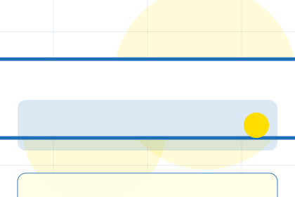
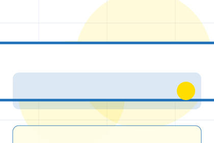
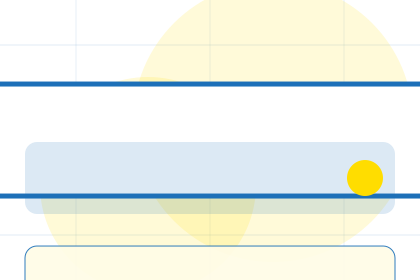
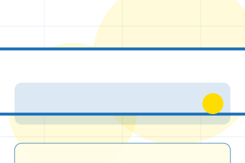
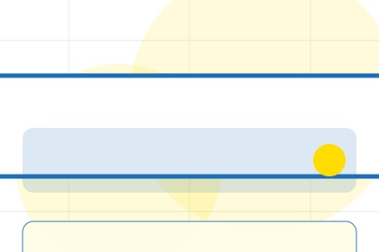
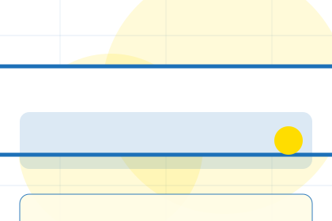
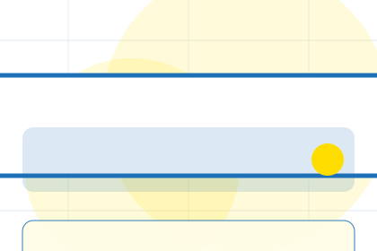
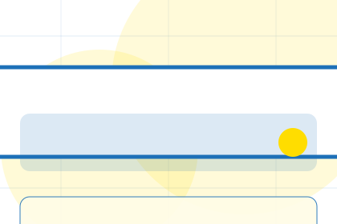
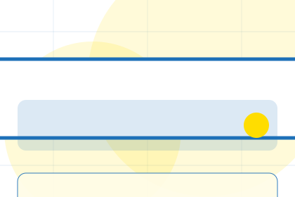
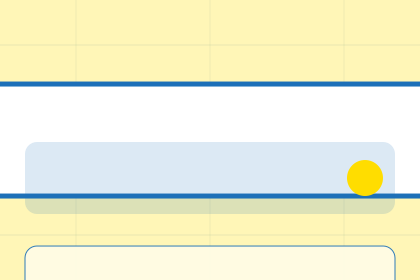

Context
Access gives the page a specific angle instead of repeating the navigation label.
Government
Public service task flow for public service access.

Home / 02
Need frames the pressure behind the visit, then connects it to a practical path visitors can recognise and act on.
The copy avoids blame and panic. It shows the common friction, the practical consequence, and the calmer route Forum uses to move people forward.
Open CouncilNeed names the real friction visitors bring to the home route, so the page feels relevant before any claim is made.
The copy connects that friction to practical risk, delay, confusion, or missed opportunity without exaggerating it.
The final cue moves visitors toward a clearer route instead of leaving them with the problem alone.
Home / 03
Access adds civic context to the home route, using the public service task flow structure to support public service access before visitors choose a next step.
Forum uses square service boxes and focused copy to make the decision easier to scan, aligning the section with public service access rather than filling space.
Open Services

Access gives the page a specific angle instead of repeating the navigation label.
Home / 04
Updates adds civic context to the home route, using the public service task flow structure to support public service access before visitors choose a next step.
Forum uses square service boxes and focused copy to make the decision easier to scan, aligning the section with public service access rather than filling space.
Open OfficesUpdates gives the page a specific angle instead of repeating the navigation label.

The square service boxes show what to compare, what to avoid, and what matters most for government, public sector & civic services visitors.

The final cue points to a useful internal route so the section keeps the journey moving.
Home / 05
Services explains the practical scope, best-fit situations, and expected outcome so government visitors can compare options without decoding jargon.
The section keeps the offer concrete: what is included, who it is best for, what decision it supports, and which linked route gives the deeper detail.
Open ServicesWho should use services and when it belongs in the home journey.
The practical benefit visitors should expect after choosing this route.

Where to compare details, pricing, support, or contact options before committing.
Plain service hero
Select the closest route and Forum keeps the next step, proof, and follow-up expectation aligned with public service access.
Home / 06
Forms makes the contact path concrete: what to send, how the response works, and what Forum needs before visitors start a request.
The section reduces contact friction by naming the channel, expected detail, privacy path, and response expectation instead of dropping visitors into a generic form.
Open FormsWhat information helps Forum respond with a useful answer instead of a generic reply.
How the visitor should think about response, urgency, location, or availability.
The expected next message keeps scope, timing, and the first practical step clear.
Home / 07
Support explains the practical scope, best-fit situations, and expected outcome so government visitors can compare options without decoding jargon.
The section keeps the offer concrete: what is included, who it is best for, what decision it supports, and which linked route gives the deeper detail.
Open ContactWho should use support and when it belongs in the home journey.
The practical benefit visitors should expect after choosing this route.
Where to compare details, pricing, support, or contact options before committing.
Home / 08
Transparency adds civic context to the home route, using the public service task flow structure to support public service access before visitors choose a next step.
Forum uses square service boxes and focused copy to make the decision easier to scan, aligning the section with public service access rather than filling space.
Open Support
Transparency gives the page a specific angle instead of repeating the navigation label.

The square service boxes show what to compare, what to avoid, and what matters most for government, public sector & civic services visitors.

The final cue points to a useful internal route so the section keeps the journey moving.
Home / 09
Questions handles buying doubts directly so visitors can understand timing, fit, limits, and the safest next step.
Answers are short by design: enough to remove hesitation, not so much that the page turns into documentation before the visitor can act.
Open ContactQuestions gives the page a specific angle instead of repeating the navigation label.
The square service boxes show what to compare, what to avoid, and what matters most for government, public sector & civic services visitors.

The final cue points to a useful internal route so the section keeps the journey moving.
Forum starts with a focused intake so the recommendation matches the visitor's context, risk, timing, and readiness.
Each route explains inclusions, exclusions, documents, timing, and the decision points that affect final delivery.
The theme uses public service task flow, square service boxes, and service search, form finder, document filter, alert controls rather than a shared template rhythm.
Plain service hero
Select the closest route and Forum keeps the next step, proof, and follow-up expectation aligned with public service access.
Home / 10
Forum closes the home route with a clear action, a quick reminder of the value, and a low-friction way to start a request.
Visitors who are ready can use the primary action. Visitors who are still comparing can scan the section links, proof, and support routes before they start a request.
Start RequestThe final block keeps the choice simple: act now, compare one more proof route, or send enough detail for a focused response.
Start Requestpublic service access
A civic service site with task-first pages, blue start buttons, form patterns, and accessibility-first structure. Home ends with a direct path to start a request, plus enough context for visitors who still need to compare.

Start Request